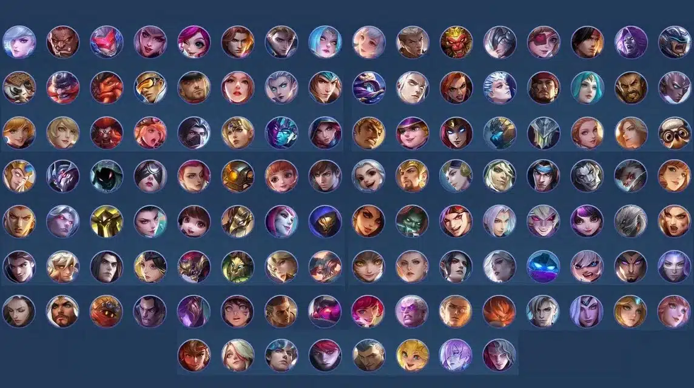

Heroes
Mobile Legends has six hero classes: Assassin, Marksman, Tank, Support, Fighter, and Mage. Each class has unique attributes, and some heroes are hybrids, meaning they fit into two classes, like Fighter/Assassin or Tank/Fighter.

Hero Roles
- Marksmen: Usually play Gold Lane. They deal high damage later in the game and are often the team's main damage dealers.
- Assassins: Usually jungle. Their burst damage helps them clear jungle camps, while their high mobility allows them to rotate and gank other lanes.
- Mages: Usually play Mid Lane. They help in teamfights providing either poke or burst magic damage and more importantly crowd control.
- Fighters: Usually play EXP Lane. They excel in drawn-out battles by dealing sustained damage.
- Tanks: Often roam. They absorb damage and protect teammates.
- Supports: Often roam. They help with healing, shields, and crowd control.
These are the usual positions, but different heroes and team compositions can change where you play.
Choose a Hero Role
The role description will appear here.
Hero Questions
- Which role usually plays Gold Lane?
- Which hero class is common in the jungle?
- Where do fighters usually start?
Questions and Answers
| Question | Answer |
|---|---|
| Which role usually plays Gold Lane? | Marksman. |
| Which hero class is common in the jungle? | Assassin. |
| Where do fighters usually start? | EXP Lane. |